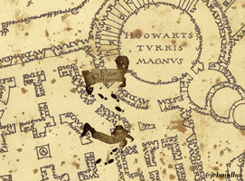

The Marauder's Map is a magical parchment showing Hogwarts castle and grounds in its entirety, including seven secret passages into the castle. These passages are unknown to most, though Filch apparently knows four. The map also shows every person's location within the castle's premises, identified by their names in minuscule writing.
When the map is inactive, it appears to be large blank parchment. It is activated by placing a wand tip on it and saying, "I solemnly swear that I am up to no good." To restore its blanked appearance, a wand taps it again as the holder says, "Mischief managed," causing the map to go blank.
When the map is activated, the parchment will reveal a writing:
Purveyors of Aids to Magical Mischief-Makers
are proud to present
the Marauder's Map
The map was created by the Marauders: Remus Lupin (Moony), Peter Pettigrew (Wormtail), Sirius Black (Padfoot) and James Potter (Prongs) during their years at Hogwarts, and was confiscated by Filch because he believed it to be a dark object, though he apparently never discovered its secret. The Weasley twins stole it from his files, and it became useful in their own mischief-making; they, in turn, passed it on to Harry when it appeared that he would otherwise be unable to visit Hogsmeade. Harry has used it extensively since.
